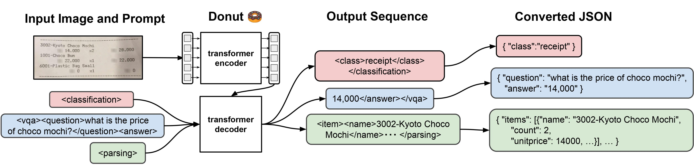

03 Hugging Face
OCR 없이 문서 답을 생성
mit 사내 사용 가능공개일 03.09
문서 QA는 OCR을 먼저 붙이는 방식만 있는 것이 아니다. 문서 이미지를 바로 보고 답을 만드는 모델도 있다. naver-clova-ix/donut-base-finetuned-docvqa는 그 흐름에서 널리 거론되는 DocVQA 미세조정 모델이다. 이번 카드에는 허깅페이스 팀이 작성한 요약만 실려 있다.
무엇을 하는 모델인가
이 모델은 문서 이미지를 보고 질문 답을 생성한다. NAVER CLOVA IX가 만든 Donut의 DocVQA 미세조정판이다. OCR 없이 문서 이해를 겨냥한 계열이다. 상업 이용은 허용된다.

어떻게 불러 쓰나
| 라이브러리 | transformers |
|---|---|
| 파이프라인 | image-text-to-text |
| 권장 사용법 | We refer to the documentation which includes code examples. |
원문 카드에 실행 예제가 없습니다.
돌리는 데 필요한 것
| 라이브러리 | transformers |
|---|---|
| 파이프라인 | image-text-to-text |
| 파라미터 | 카드·API에 없음 |
| 제공 형식 | 파생본 등 2건 있음 |
라이선스와 사내 반입
- 라이선스
- mit 사내 사용 가능
- 상업 이용
- 상업 이용에 제약 없음
- 접근 승인
- 필요 없음
- 재배포·파생
- 제한 없음
자동 분류이며 법무 판단을 대신하지 않습니다.
성능과 한계
카드는 이 모델이 DocVQA에 맞춰 미세조정됐다고만 적었다. 점수 표, 측정 주체, 비교 대상은 없다. 카드는 평가 결과를 밝히지 않았다.
언제 이것을 고르나
OCR 단계를 줄인 흐름을 시험하려면 이 모델을 볼 수 있다. 같은 커버 후보인 impira/layoutlm-document-qa는 문서 QA 파이프라인 예제가 바로 있다. 반면 이 모델은 카드에 실행 예제와 장비 조건이 부족하다. 상업 이용 제약은 없지만, 바로 PoC를 돌릴 팀이라면 정보가 더 많은 후보가 편하다.
주요 용어
원문 정보
제목: naver-clova-ix/donut-base-finetuned-docvqa
공개일: 2024.03.09
출처 URL: https://huggingface.co/naver-clova-ix/donut-base-finetuned-docvqa